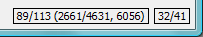

|
la ventana principal de OmegaT |
Contiene el Menú principal, la barra de estado y 3 paneles: |
|
― Panel de edición |
En el cual escribe y edita la traducción |
|
― Panel visor de coincidencias |
Con los segmentos más parecidos en las memorias de traducción |
|
― Panel visor de glosario |
Con la terminología de la traducción |
|
Ventana archivos del proyecto |
|
|
|
|
|
|
|
Deberá usar los siguientes cuadros de diálogo para cambiar la configuración del proyecto OmegaT. Todas ellas se describen en secciones separadas, a continuación resumimos cómo se pueden utilizar y cómo las puede invocar:
|
|
|
|
|
|
|
|
|
|

La ventana principal se compone de varios paneles, el menú principal y una barra de estado. Puede cambiar la posición de cualquier panel o incluso desacoplarlo a una ventana arrastrando el panel por su nombre. Dependiendo del estado del panel, pueden aparecer distintos signos en la esquina superior derecha:
 Reduce el panel para mostrar sólo su nombre en la parte inferior, cerca de la barra de estado.
Reduce el panel para mostrar sólo su nombre en la parte inferior, cerca de la barra de estado.
 Hace que el panel tome todo el espacio disponible en ventana.
Hace que el panel tome todo el espacio disponible en ventana.
 Regresa el panel a la posición dónde estaba antes de minimizarlo o maximizarlo.
Regresa el panel a la posición dónde estaba antes de minimizarlo o maximizarlo.
 Separa el panel de la ventana principal a una ventana independiente.
Separa el panel de la ventana principal a una ventana independiente.
 Coloca de nuevo el panel dentro de la ventana principal.
Coloca de nuevo el panel dentro de la ventana principal.
También es posible colocar los paneles de forma que se solapen. En este caso los paneles mostrarán una pestaña en la parte superior. Al hacer clic en la pestaña pondrá el panel en primer plano. Los separadores entre paneles se pueden arrastrar para reajustar el tamaño de los mismos.
Los contadores en la esquina inferior derecha llevan un seguimiento del progreso de la traducción:

| 31/34 | Número de segmentos - traducidos / total, del archivo actual |
| 2530/2605 | Cantidad de segmentos únicos ― traducidos / total en el proyecto |
| 3196 | Número total de segmentos (incluyendo repetidos) en el proyecto |
| 39/53 | Número de palabras en la fuente y en el segmento traducido |
Aquí podrá escribir y editar la traducción. El panel de edición, muestra el texto del documento parcialmente traducido: el texto ya traducido aparece traducido, y el texto aún no traducido se muestran en el idioma original. El texto mostrado se divide en segmentos, y usted puede desplazarse por el documento y hacer doble clic en cualquier segmento para editarlo. En el caso anterior los segmentos ya traducidos no están marcados explícitamente, sin embargo usted puede cambiar la configuración para adaptarla a sus preferencias ― por ejemplo, marcarlos en amarillo (vea el menú Ver).
Uno de los segmentos es el segmento activo. Este es el único que se muestra en dos partes: la parte superior está en el idioma original, en negrita con fondo de color verde, la parte inferior es el campo de edición, delimitado por dos marcadores: el marcador del extremo izquierdo es <segment nnnn> donde nnnn es su número de segmento en el proyecto, el marcador más a la derecha es <end segment>. Usted utiliza la parte superior como referencia y sobrescribe o modifica el contenido del campo de edición con la traducción.
En función del Comportamiento del campo de edición el segmento no traducido puede estar vacío, contener el texto fuente o la traducción de la cadena más parecida a la que se va a traducir. Cuando usted se mueve a otro segmento, la traducción será validada y almacenada. Si desea que el segmento se quede sin traducir, simplemente deje el campo de edición vacío mediante la eliminación de todo el texto (seleccione todo con Ctrl+A y bórrelo con Del). OmegaT puede recordar una traducción cuando ésta es idéntica al original. Es útil para documentos que contienen marcas comerciales, nombres u otros nombres propios, o partes en un tercer idioma que no requieren traducción.
Vea Editando la traducción para más detalles.

Cuando se mueve al siguiente segmento, la primer coincidencia parcial (la que tiene el mejor porcentaje de similitud) se selecciona automáticamente. La coincidencia parcial seleccionada se resaltará en negrita, las palabras que faltan en el segmento que usted está traduciendo serán coloreadas en azul y las palabras adyacentes en verde. Es posible seleccionar una coincidencia diferente, oprimiendo Ctrl+2, 3, 4 ó 5. Por supuesto, al presionar Ctrl+5 no hará nada, si no hay ninguna coincidencia #5. Para utilizar la coincidencia seleccionada en su traducción, use Ctrl+R para reemplazar el campo destino con la coincidencia o use Ctrl+I para insertarla en la posición del cursor.
El porcentaje de similitud ― es decir, la medida de la diferencia entre el segmento fuente y coincidencias candidatas ― es aproximadamente equivalente al número de palabras comunes en la coincidencia parcial y el segmento coincidente, dividida por el número de palabras en el más largo de los dos. En caso de utilizar el plug-in tokenizer, las palabras en los dos segmentos primero se reducen a sus raíces. Alternativamente, las palabras se quedan como están, y sólo la puntuación, los números y las etiquetas son ignoradas. Por último, las diferencias en las etiquetas, números y puntuación ― que se han omitido en los dos primeros casos ― se pueden incluir en el cálculo. El visor de coincidencias eventualmente muestra los tres parámetros de la siguiente manera:
<% de coincidencia, cuando se utiliza el plugin tokenizer / % de coincidencia predefinida por OmegaT / % de coincidencia incluyendo etiquetas, números y puntuación>En el ejemplo anterior, las dos primeras cifras (46/46) son iguales, debido a que no se ha utilizado el tokenizer. El tercer porcentaje (39) es menor debido a diferencias en la puntuación y las etiquetas utilizadas.
Si no hay nombre de archivo mostrado, la fuente predeterminada es la memoria de traducción del proyecto. Los segmentos huérfanos (la coincidencia #1) marca segmentos en la memoria de traducción predeterminada sin un texto correspondiente en los archivos fuente del proyecto. En el caso anterior, el párrafo original, ya se ha editado y traducido con OmegaT.
El panel del glosario le permite acceder a su colección privada de expresiones y términos especializados, que se han acumulado en su archivo de glosario. Este muestra la traducción de términos que se encuentran en el segmento actual, pero sólo se muestra para fines de referencia, y no permite insertar o sustituir el término en su traducción.

El segmento fuente en el ejemplo anterior era "In most translation jobs it is considered important to have the translated document look similar to the original." y se encontraron en el archivo de glosario dos palabras, document y translation. OmegaT también es compatible con los términos de varias palabras, pero de una manera muy básica: si las dos palabras de un término se encuentran en el segmento actual, el término será mostrado.
Los diccionarios son la versión electrónica de printed MerriamWebsters, Duden, Larousse, etc., que usted podría tener a su escritorio.
Si activa Google Translate en Menú → Opciones, el panel Google Translate le proporcionará la traducción del segmento actual desde Google Translate, la cual puede insertar en la parte destino del segmento.
Obviamente, usted puede utilizar el menú principal para acceder a todas las funciones de OmegaT. Vea el apéndice Menú principal para una descripción completa de todos los menús y sus elementos. Las funciones utilizadas más frecuentemente son accesibles con atajos de teclado, así que una vez se acostumbre a ellos, ya no va a haber ninguna necesidad de navegar por los menús mientras traduce.
La barra de estado muestra mensajes relacionados con el flujo de trabajo en la parte inferior de la ventana principal. Esta barra ofrece mensajes comentando al usuario acerca de operaciones específicas que están en curso. También muestra el número de coincidencias parciales y del glosario para el segmento actual.
La ventana Archivos del proyecto, lista los archivos del proyecto y muestra información del proyecto. Se muestra automáticamente cuando se carga un proyecto OmegaT. Para cerrarla, utilice esc, para abrirla o invocarla utilice Ctrl+L.
Muestra la siguiente información.
La lista de todos los archivos traducibles en el proyecto. Estos son los archivos presentes en el subdirectorio fuente, que OmegaT puede manejar. Al hacer clic en algún archivo este se abrirá para su traducción.
El archivo disponible actualmente en el panel de edición está resaltado con un fondo azul.
Muestra el número de segmentos de cada archivo junto al nombre del archivo.
El número de segmentos únicos en todo el proyecto.
Y el número de segmentos únicos ya traducidos. Esto se actualiza cada vez que traduce un segmento.
El conjunto de segmentos únicos se calcula tomando todos los segmentos y eliminando todos los segmentos duplicados iguales hasta en mayúsculas y minúsculas ("Ejecutar" y "ejecutar" son diferentes).
La diferencia entre el "Número de segmentos" y "Número de segmentos únicos" le da una idea aproximada del número de repeticiones en el texto. Sin embargo, tenga en cuenta que los números no dicen que tan pertinentes son las repeticiones: podría significar apenas relativamente largas repeticiones varias veces (¡muy afortunado!) o podría describir una tabla de palabras clave (no la misma suerte...) El project_stats.txt ubicado en el subdirectorio /omegat de su proyecto, contiene información más detallada de segmentos por archivo.
Es posible modificar el número de segmentos/segmentos únicos mediante la modificación de las reglas de segmentación. Esto, sin embargo, se debe evitar a toda costa, una vez que ha comenzado a traducir el proyecto. Vea las Reglas de segmentación para mayor información.
Usted puede añadir archivos fuente al proyecto, haga clic en el botón "Importar archivos fuente...". Esto copia los archivos seleccionados al subdirectorio /source y vuelve a cargar el proyecto para tomar en cuenta los nuevos archivos. También puede agregar archivos fuente de las páginas de Internet, escritas en MediaWiki, haciendo clic en el botón "Importar desde MediaWiki" y proporcionando la dirección correspondiente.
Usará la ventana de búsqueda para encontrar segmentos específicos en el proyecto. Puede abrir varias ventanas de búsqueda simultáneamente. Para abrir una nueva, use Ctrl+F en la ventana principal. La ventana de búsqueda se compone de un campo de texto para la cadena a buscar o palabras clave, indicadores y botones de opción para la creación de la búsqueda y un área de visualización que contiene los resultados de la búsqueda.
Las búsquedas se hacen en la fuente y la traducción. Usted también puede buscar dentro de cualquier directorio, pero tenga en cuenta que OmegaT puede buscar sólo en los archivos compatibles.
Las búsquedas son compatibles con los caracteres comodín * y ? así como con expresiones regulares.
Al pulsar el botón de búsqueda después de ingresar una cadena en el campo de búsqueda, le mostrará todos los segmentos en el proyecto que incluyen la cadena de búsqueda.
Debido a que OmegaT maneja todos los segmentos idénticos como una sola entidad, sólo figura el primer segmento único. Active la casilla "Mostrar todos los resultados" para mostrar todas las instancias de los segmentos idénticos. Los segmentos se muestran en el orden de aparición en el proyecto. Los segmentos traducidos muestran el texto original en la parte superior y el texto traducido en la parte inferior, los segmentos no traducidos muestran el texto original.
Puede hacer clic en un segmento para colocarlo en el Editor y modificarlo. Entonces usted puede cambiar de nuevo a la ventana de búsqueda e ir al siguiente segmento encontrado para modificarlo también. Este patrón es útil para hacer actualizaciones de terminología.
La ventana de validación de etiquetas detecta los errores de etiqueta en la traducción y los lista. Para abrir la ventana, utilice Ctrl+T. La ventana dispone de una tabla de 3 columnas con un enlace al segmento fuente y al contenido traducido:

Las etiquetas están resaltadas en negrita azul para facilitar la comparación entre el contenido original y el traducido. Haga clic en el vínculo para saltar al segmento en el panel de edición. Corrija el error si es necesario y pulse Ctrl+T para volver a la ventana de validación de etiquetas para corregir otros errores. En el primero y tercer caso las etiquetas se emparejan de forma incorrecta, y en el segundo caso, a la etiqueta inicial le falta el signo <.
Los errores de etiqueta son etiquetas manipuladas en la traducción que no reflejan el número y orden de etiqueta en el segmento original. Algunas manipulaciones en las etiquetas son necesarias y son benignas, algunas causan problemas al crear el documento traducido. Las etiquetas, generalmente representan algún tipo de formato en el texto original. Simplificar el formato del texto original contribuye en gran medida a reducir el número de etiquetas.
El navegador de ayuda (mismo que muestra este manual) puede invocarse pulsando F1 o llamando a Ayuda → Manual de usuario... en el menú principal.
En la ventana verá el manual y dos botones: Atrás y Contenido. El manual de usuario es un documento HTML con enlaces a los diferentes capítulos. Al hacer clic en un enlace como lo haría en un navegador web trae la página deseada al frente.
El manual de usuario se encuentra en el subdirectorio docs bajo el directorio de instalación de OmegaT, por lo tanto puede ver, por ejemplo, la documentación en Español, mediante la apertura en el navegador del archivo docs/es/index.html. De esta manera usted será capaz de seguir los enlaces externos también, ya que el navegador de ayuda incorporado no acepta enlaces de Internet externos.
| Aviso Legal | Inicio | Índice de Contenido |